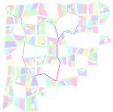
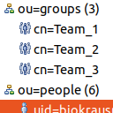

Juli 2021
GeoJSON in EBMap4D
31.07.2021
Ich habe die Anwendung EBMap4D einer Generalüberholung unterzogen und neue Features hinzugefügt...
Erweiterte Collatz-Vermutung (?)
31.07.2021
Ich bin beim Surfen im Internet über verschiedenste Videos zum Thema der Collatz-Vermutung gestoßen - ich habe auch bereits den einen oder anderen Artikel zu diesem Thema gelesen. Neulich hatte ich aber eine Idee, die ich unbedingt ausprobieren wollte, weil ich davon - oder von etwas ähnlichem - bisher weder gehört noch gelesen habe
Beliebige äußere Form für generierte Stadtpläne
25.07.2021

Ich habe den neulich vorgestellten Generator für beliebige Stadtpläne, der als Ausgabeformat unter anderem GeoJson unterstützt ein wenig erweitert
PiHole-Bug bei Installation
25.07.2021

Ich trage mich aktuell mit dem Gedanken, analog zu meinen Skripts zur Einrichtung von Kartenservern oder Netzwerkinfrastruktur einen kleinen Server komplett unattended einrichten zu können, der PiHole, DNSSEC und einen autonomen root-Resolver integriert.
Hexaflexagon
22.07.2021

Durch ein Video-Interview mit John Conway - dem Erfinder des Game Of Life - wurde ich auf das Hexaflexagon aufmerksam,,,
Monitoring Raid Rebuild mit Grafana
22.07.2021
Nachdem eins meiner Raids neulich einen Check durchführen wollte habe ich überlegt, ob man den Fortschritt dabei (oder bei einem Rebuild) mittels Telegraf in Grafana abbilden könnte.
Java-Bug: JPopupMenu und modale Dialoge
15.07.2021

Ich musste neulich feststellen, dass sich im OpenJDK noch Bugs verstecken, die sogar ich finden kann...
sQLshell Support für LDAP II
15.07.2021

Ich habe hier vor kurzem bereits über die Integration von LDAP in die sQLshell berichtet. Diese wurde nun weiter verbessert.
Generator für LDIF Dateien zum Test von Verzeichnisdiensten
15.07.2021

Ich hatte hier in letzter Zeit verschiedentlich auf einen Docker-Container hingewiesen, der es erlaubt, schnell einfache LDAP-Tests durchzuführen. Ich habe das Repository inzwischen geforkt und einige weitere Beispieldatensätze aus dem Internet eingefügt - das reichte mir aber noch nicht...
Keycloak und LDAP
11.07.2021

Nachdem ich neulich bereits über die erfolgreiche Kopplung zwischen Keycloak und LDAP berichtete, bin ich noch einige Schritte weitergegangen...
Ältere Artikel
Hier geht es zum Archiv der Artikel, die vor dem 04.07.2021 verfasst wurden:
- Nginx als reverse Proxy für Docker-Container
- Linux Linkdump 2021 II
- ...


Tags
Januar 2023 Dezember 2022 November 2022 Oktober 2022 September 2022 August 2022 Juli 2022 Juni 2022 Mai 2022 April 2022 März 2022 Februar 2022 Januar 2022 Dezember 2021 November 2021 Oktober 2021 September 2021 August 2021 Juli 2021 Juni 2021 Mai 2021 April 2021 März 2021 Februar 2021 bis zum Januar 2021 Upcoming...
Manche nennen es Blog, manche Web-Seite - ich schreibe hier hin und wieder über meine Erlebnisse, Rückschläge und Erleuchtungen bei meinen Hobbies.
Wer daran teilhaben und eventuell sogar davon profitieren möchte, muß damit leben, daß ich hin und wieder kleine Ausflüge in Bereiche mache, die nichts mit IT, Administration oder Softwareentwicklung zu tun haben.
Ich wünsche allen Lesern viel Spaß und hin und wieder einen kleinen AHA!-Effekt...
PS: Meine öffentlichen GitHub-Repositories findet man hier - meine öffentlichen GitLab-Repositories finden sich dagegen hier.